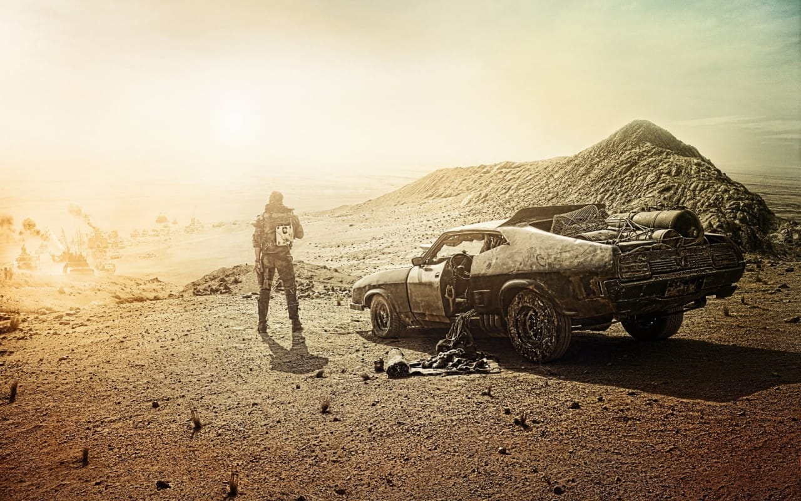

MAD MAX : FURY ROAD
Mad Max: Fury Road is a 2015 Australian post-apocalyptic action film co-written, co-produced, and directed by George Miller. Miller collaborated with Brendan McCarthy and Nico Lathouris on the screenplay. The fourth instalment and a reboot[7] of the Mad Max franchise, it was produced by Village Roadshow Pictures, Kennedy Miller Mitchell and RatPac-Dune Entertainment and distributed by Roadshow Entertainment in Australia and by Warner Bros. Pictures internationally. The film stars Tom Hardy and Charlize Theron with Nicholas Hoult, Hugh Keays-Byrne, Rosie Huntington-Whiteley, Riley Keough, Zoë Kravitz, Abbey Lee and Courtney Eaton in supporting roles. Set in a post-apocalyptic desert wasteland where gasoline and water are scarce commodities, Fury Road follows Max Rockatansky, who joins forces with Imperator Furiosa to flee from cult leader Immortan Joe and his army in an armoured tanker truck, leading to a lengthy road battle.
WHERE WILL YOU FIND IT
You will find the cinema right next to the Food Court.